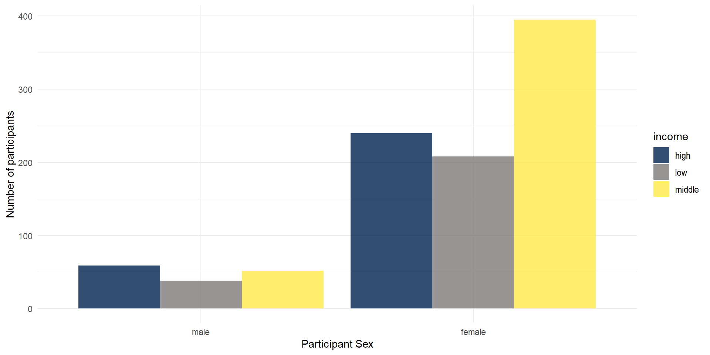

04 Data Visualization
Course: “Biostatistics”
Translational Neuroscience
Data Viz
Why should we visualize our data?
check whether data make sense (unusual observations?)
honestly and comprehensively present the data
(visually) check whether data fits the assumptions of statistical tests
It’s fun! (And plots are probably the most important information in papers!)
ggplot
We will use a package called ggplot2 (which is part of the tidyverse). ggplot2 is a very versatile package and allows us to make beautiful figure, which are immediately ready for publication.
The main function to “start” plotting is ggplot() - we will then add layers of data and layers to tweak the appearance.

Layers of a ggplot
Activity 1: Set Up
Open RStudio and load your Biostats R project. Create a new script called
DataVisualisation1.R.Make sure you have the following two files downloaded into your project folder (we already used them in Intro to R presentation):
ahi-cesd.csvandparticipant-info.csv.Copy and run the code below to load the
tidyversepackage and the data files:
- Run the following code to combine both files and select our variables of interest:
all_dat <- dat %>% inner_join(pinfo,
by=c("id", "intervention")) %>%
arrange(id, occasion) #joining messes up the order of the data frame => arrange again
#we throw out several variables even though they would be important for a comprehensive data analysis
summarydata <- all_dat %>% select(id, ahiTotal, cesdTotal, #ID & questionnaire scores
sex, age, educ, income) #demographic variablesLook at the Data
Have a look at the types of data:
Rows: 992
Columns: 7
$ id <dbl> 1, 1, 2, 2, 2, 2, 2, 2, 3, 3, 4, 4, 4, 4, 5, 5, 5, 5, 5, 6, …
$ ahiTotal <dbl> 63, 73, 73, 89, 89, 93, 80, 77, 77, 85, 60, 67, 56, 61, 41, …
$ cesdTotal <dbl> 14, 6, 7, 10, 13, 8, 15, 12, 3, 5, 31, 31, 41, 35, 27, 32, 2…
$ sex <dbl> 2, 2, 1, 1, 1, 1, 1, 1, 1, 1, 1, 1, 1, 1, 2, 2, 2, 2, 2, 1, …
$ age <dbl> 35, 35, 59, 59, 59, 59, 59, 59, 51, 51, 50, 50, 50, 50, 58, …
$ educ <dbl> 5, 5, 1, 1, 1, 1, 1, 1, 4, 4, 5, 5, 5, 5, 5, 5, 5, 5, 5, 5, …
$ income <dbl> 3, 3, 1, 1, 1, 1, 1, 1, 3, 3, 2, 2, 2, 2, 2, 2, 2, 2, 2, 1, …What do you see?
All variables are loaded as numeric. However, are all of those numeric?
sex, educ and income don’t seem to really be numbers but factors with individual categories (factor levels)!
We should convert these data to factor. Checking and adjusting data types (as part of data wrangling) will be important for plotting and analyzing the data, you might otherwise get strange/wrong results!
Activity 2: Transform Data Type
Copy and run the below code to change the categories to factors.
So for example, the 1s in
sexchange to categorical factors instead of numerical 1s.If you mutate a new column with the same name as the old one, it will overwrite the column.
You can read each line of the mutate as “overwrite the data that is in that column with the same values now considered factors and not doubles”
summarydata1 <- summarydata %>%
mutate(sex = as_factor(sex),
educ = as_factor(educ),
income = as_factor(income))
glimpse(summarydata1)Rows: 992
Columns: 7
$ id <dbl> 1, 1, 2, 2, 2, 2, 2, 2, 3, 3, 4, 4, 4, 4, 5, 5, 5, 5, 5, 6, …
$ ahiTotal <dbl> 63, 73, 73, 89, 89, 93, 80, 77, 77, 85, 60, 67, 56, 61, 41, …
$ cesdTotal <dbl> 14, 6, 7, 10, 13, 8, 15, 12, 3, 5, 31, 31, 41, 35, 27, 32, 2…
$ sex <fct> 2, 2, 1, 1, 1, 1, 1, 1, 1, 1, 1, 1, 1, 1, 2, 2, 2, 2, 2, 1, …
$ age <dbl> 35, 35, 59, 59, 59, 59, 59, 59, 51, 51, 50, 50, 50, 50, 58, …
$ educ <fct> 5, 5, 1, 1, 1, 1, 1, 1, 4, 4, 5, 5, 5, 5, 5, 5, 5, 5, 5, 5, …
$ income <fct> 3, 3, 1, 1, 1, 1, 1, 1, 3, 3, 2, 2, 2, 2, 2, 2, 2, 2, 2, 1, …[1] 5 1 4 2 3
Levels: 1 2 3 4 5Transform Data Type 2
A simple change to a factor is not always helpful. We still don’t know what a 1 in sex or a 5 in educ stands for:
sex: 1 = female, 2 = maleeduc: 1 = no graduation, 2 = school graduation, 3 = vocational training, 4 = bachelor’s degree, 5 = post graduateincome: 1 = low, 2 = middle, 3 = high
Transform Data Type 3
A simple change to a factor is not always helpful. We still don’t know what a 1 in sex or a 5 in educ stands for:
summarydata2 = summarydata1 %>%
mutate(sex = sex %>% recode("1" = "female", "2" = "male"),
educ = educ %>% recode("1" = "no graduation",
"2" = "school graduation",
"3" = "vocational training",
"4" = "bachelor's degree",
"5" = "post grad"),
income = income %>% recode("1" = "low",
"2" = "middle",
"3" = "high"))
#glimpse(summarydata2)
summarydata2 %>% pull(educ) %>% unique()[1] post grad no graduation bachelor's degree
[4] school graduation vocational training
5 Levels: no graduation school graduation ... post gradTransform Data Type 4
recode() only works with data that are already factors. What if we start with the original data (i.e., summarydata instead of summarydata1)?
# no factors yet => refer to original data as numbers WITHOUT quotation marks
summarydata3 = summarydata %>%
mutate(sex = if_else(sex==1, "female", "male") %>% as_factor(), #could also use case_match
educ = educ %>% case_match(1 ~ "no graduation",
2 ~ "school graduation",
3 ~ "vocational training",
4 ~ "bachelor's degree",
5 ~ "post grad") %>% as_factor(),
income = income %>% case_match(1 ~ "low", 2 ~ "middle", 3 ~ "high") %>% as_factor())
#glimpse(summarydata3)
summarydata3 %>% pull(educ) %>% unique()[1] post grad no graduation bachelor's degree
[4] school graduation vocational training
5 Levels: post grad no graduation bachelor's degree ... vocational trainingFactor is now ordered by occurrence in data! :(
Transform Data: Summary
- If data are factors coded as numbers, do
as_factor()first (implicitly sorts levels ascendingly) and thenrecode() - If data are factors coded as characters, make sure that the ordering is correct (e.g., use
arrange()for alphabetical order) or create a newfactor()with explicit ordering:
- Warning: If numbers are represented as characters (
"1"instead of just1), handle them as characters or cast them to a number:
Activity 3: Barplot
A bar plot is a plot that shows counts of categorical data (factors), where the height of each bar represents the count of that variable.
We will plot male and female participants.
The First Layer
The first line (or layer) sets up the base of the graph: the data to use and the aesthetics (what will go on the x and y axis, how the plot will be grouped).
aes()can take both anxandyargument, however, with a bar plot you are just asking R to plot the number of data points in each group onto the y-axis, so you do not specifyyhere.
The Second Layer
The next layer adds a geom or a shape. In this case we use geom_bar() as we want to draw a bar plot.
- Note that we are adding layers, using a
+between layers. This is a very important difference between pipes and visualization.
The Second Layer with color
Adding
fillto the first layer will separate the data into each level of the grouping variable and give it a different color. In this case, there is a different colored bar for each level ofsex.We can get rid of the (in this case redundant legend) with
show.legend = FALSE.
The Next Layers - Improving the Plot
We might want to make the plot a bit prettier and easier to read. What would you improve?
We might want to add better axis labels and change the colors of the bars. We can do so with the functions scale_x_discrete() and scale_y_continuous(), which will adjust the x and y axes.
We will use these two arguments in those functions:
namecontrols/overwrites the axis name (e.g. Groups)labelscontrols the break points on the axis, i.e. what are the conditions called? The order is important here!

Themes: Changing the Appearance
There are a number of built-in themes that you can use to change the appearance (background, whether axes are shown etc.), but you can also tweak the themes further manually.
We will now change the default theme to theme_minimal(), but you can also try other themes (just type “theme_” and see what the autocomplete brings up).
Colors
There are various ways to change the colors of the bars. You can manually indicate the colors you want to use but you can also easily use pre-determined color palettes that are already checked for color-blind friendliness.
A popular palette is viridis. We can simply add a function/layer to your ggplot named scale_fill_viridis_d() (d for discrete). The function has an option parameter that takes 5 different values (A - E).
- Type and run the below code into a new code chunk. Try changing the option to either A, B, C or D and see which one you like!
Transparency
You can also add transparency to your plot, which can be helpful if you plot several layers of data.
To do so, you can simply add alpha to the geom_bar():
Grouped Plots
Let’s go back to the bar plot (but works similarly for other plots as well): Imagine that you have several factors that you want to use to group your data, such as gender and income. In this case, you could use a grouped bar plot:
ggplot(summarydata1, aes(x = sex, fill = income)) +
geom_bar(position = "dodge", #prevents "stacked" barplots
show.legend = TRUE,
alpha = .8) +
scale_x_discrete(name = "Participant Sex",
labels = c("Female", "Male")) +
scale_y_continuous(name = "Number of participants") +
theme_minimal() +
scale_fill_viridis_d(option = "E")Facetting
You could also use facets to divide your data visualizations into several subplots: facet_wrap for one variable.
ggplot(summarydata2, aes(x = sex, fill = sex)) +
geom_bar(show.legend = FALSE,
alpha = .8) +
scale_x_discrete(name = "Participant Sex") +
scale_y_continuous(name = "Number of participants") +
theme_minimal() +
scale_fill_viridis_d(option = "E") +
facet_wrap(vars(income)) #in this function, you need to use vars() around variable namesFacetting 2
You could also use facets to divide your data visualizations into several subplots: facet_grid for a matrix of (combinations of) two variables.
ggplot(summarydata2, aes(x = sex, fill = sex)) +
geom_bar(show.legend = FALSE,
alpha = .8) +
scale_x_discrete(name = "Participant Sex") +
scale_y_continuous(name = "Number of participants") +
theme_minimal() +
scale_fill_viridis_d(option = "E") +
facet_grid(rows=vars(income),
cols=vars(educ),
labeller = "label_both") #this adds the variable name into the facet legendsActivity 4: The Violin-Boxplot
There are a number of different figure types you can plot with the different geoms, e.g. geom_point(), geom_histogram(), geom_line()…
We now want to plot a form of a boxplot that becomes more popular: The violin-boxplot (which combines, i.e. overlays, the violin plot with a boxplot).
Violin-Boxplot
Let’s look at the code. How does the code differ from the one for the barplot above?
ggplot(summarydata1, aes(x = income,
y = ahiTotal, #new variable!
fill = income)) +
geom_violin(trim = FALSE, #smooth on edges
show.legend = FALSE,
alpha = .4) +
geom_boxplot(width = .2, #small boxplot contained in violin
show.legend = FALSE,
alpha = .7)+
scale_x_discrete(name = "Income",
labels = c("Below Average",
"Average",
"Above Average")) +
scale_y_continuous(name = "Authentic Happiness Inventory Score")+
theme_minimal() +
scale_fill_viridis_d()
Layer Order
The order of layers is crucial, as the plot will be built up in that order (later layers on top):
Scatterplot
If we have continuous data of two variables, we often want to make a scatter plot:
Saving your Figures
You can use ggsave() to save your plots. If you don’t tell ggsave() which plot you want to save, by default it will save the last plot you created.
You just have to enter the name of the file to be saved (in your working directory) like this:
Check whether indeed the last plot was saved!
You can also specify the dimensions of your plot to be saved:
or
Saving your Figures 2
You can also assign the plot to a variable in your environment (just like we did with the tibbles previously) and then tell ggsave() which object to save. This is a bit safer.
Run the code for the violin-boxplot again and save the plot in an object called viobox. You’d then have to explicitly tell ggsave() to save the object viobox:
viobox <- summarydata1 %>%
ggplot(aes(x = income,
y = ahiTotal,
fill = income)) +
geom_violin(trim = FALSE,
show.legend = FALSE,
alpha = .4) +
geom_boxplot(width = .2,
show.legend = FALSE,
alpha = .7) +
scale_x_discrete(name = "Income",
labels = c("Below Average",
"Average",
"Above Average")) +
scale_y_continuous(name = "Authentic Happiness Inventory Score")+
theme_minimal() +
scale_fill_viridis_d()
ggsave("violin-boxplot-stored.png", plot = viobox)Thanks!
Check out Chapter 13 of QuantFun for further exercises and tips for data visualization!
Also keep in mind: Coding is a lot of googling things!
You can also check out the R Graph Gallery for code for different types of plots.
Learning objectives
Know how to transform (pivot) and join data
Understand the basics of a ggplot (layers etc.)
Be able to make your first own plots, such as bar charts, violin + boxplots, scatterplots
Know what a grouped plot and a facetted plot is
Next:
- Sampling